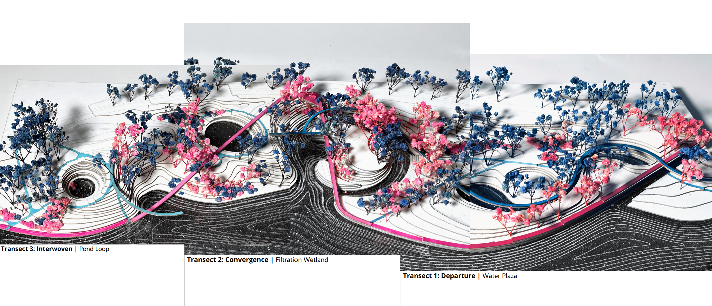
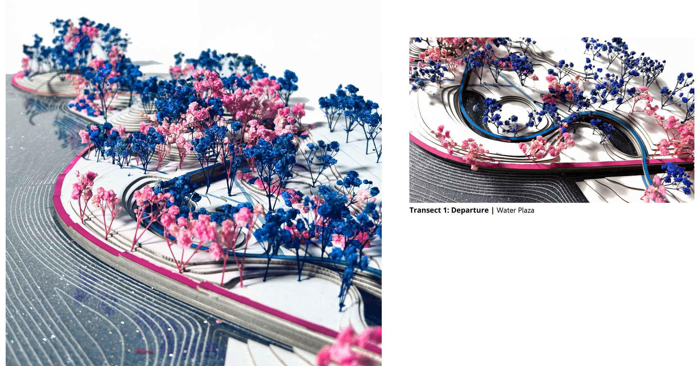
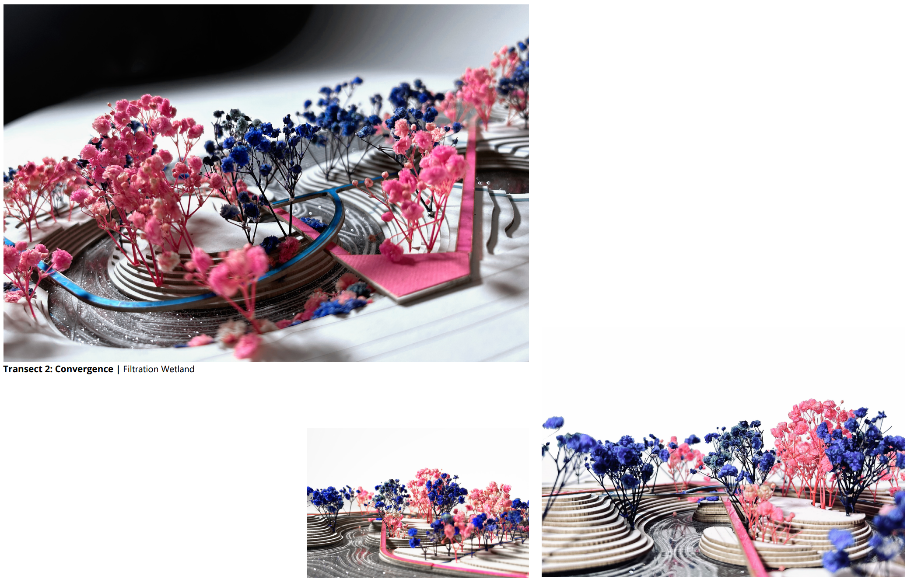
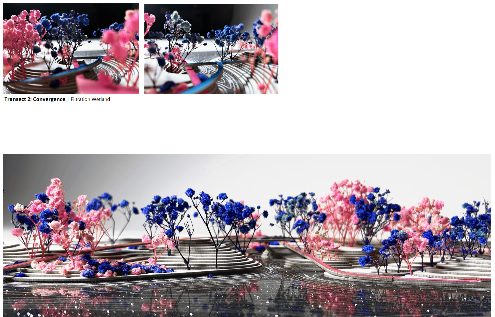
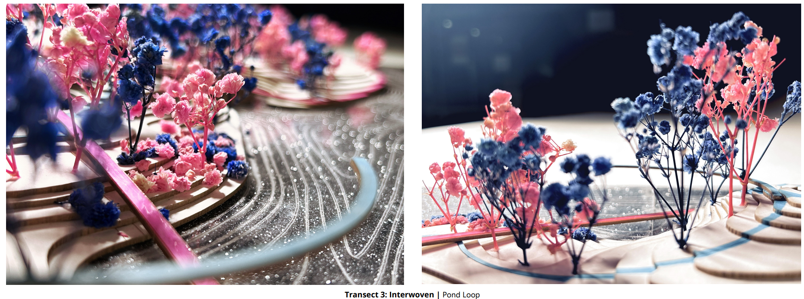
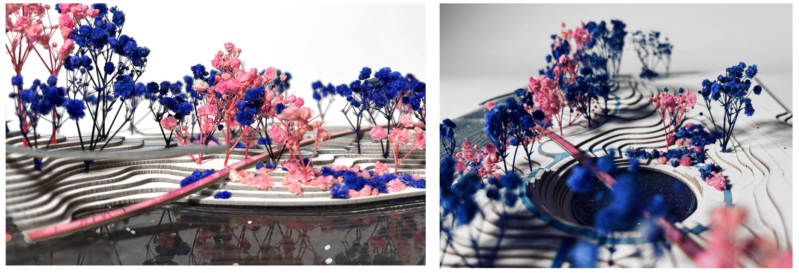

STRUCTURING FLOWS

Form is the diagram of force. What we see today was produced by the flows yesterday. Form determines structures, and structure determines flows (Forman, 2013). This design responds to the existing and proposed urban adjacencies across the Herter Park boundary and varying degrees of wetness throughout the park itself and reconnects them through two pathway systems that structure the flow of people, the flow of water, and the flow of landforms to create different levels of interactions between humans and water.
Addressing the increasing density resulting from the impact of the future redevelopment plan, this proposal focuses on the critical issues of connection and activation within Herter Park. Soldier's Field Road is a man-made, huge asphalt structure that channels the flow of people. The prevailing obstacle disrupts community connectivity and hinders the park's recreational and ecological potential due to high-speed traffic, making it unable to serve existing and future communities that are moving in with the redevelopment of the park’s urban edge. The impending redevelopment plan, however, offers an opportunity to reimagine the road as a gateway, fostering a renewed connection between Lower Allston and the Charles River.
The main objective is to facilitate easy access for Lower Allston residents to the park and Boston's green network. This is achieved by transforming Soldier's Field Road into a linear plaza, marked by multiple openings on both sides. Simultaneously, the design seeks to activate underutilized spaces through two distinct pathway systems. A zigzag, 15-foot-wide pathway connects bike lanes and waterfront promenades, ensuring the appreciation of the littoral environment without compromising speed movement. A curvilinear, 8-foot-wide route unfolds in various forms (bridge, pier, submersible boardwalk, etc.), encircling passive to active recreational spaces and providing intimate, slow-paced vistas and engagement with water landscapes.

The sequence of active and passive recreation spaces enriches the park experience. Shaded forest trails and a community garden provide a tranquil setting, while a multi-generational gathering island hosts fishing and a children's playground. The confluence water plaza offers opportunities for swimming and picnicking, while wetland boardwalks and woodland loops cater to birdwatching enthusiasts.
The two pathway systems structure the flow of vistas and landscape experiences and form three spatial relationships: departure, convergence, and interwoven. I was interested to explore how such relationships could structure the levels of activity and wetness in my three transects.


Transect 1, Water Plaza, considers the streetscape of the new parkway, introducing roadside parking, and playing with new water features within a continuous water body, including a fountain, swimming pool, and stream.


Transect 2, Filtration Wetland, concentrates on redesigning the underused amphitheater and developing planting schemes for water infiltration, fostering immersive experiences along a linear walkway where water converges.
 

In Transect 3, Pond Loop, the focus shifts to strategically managing rainwater runoff and riverside flooding through retention and detention ponds. Topographic variations create a nuanced transition from the tranquil Harvard campus to busier, mixed-use areas, accommodating various wetness levels in different flooding scenarios.
 Through the introduction of two pathway systems, multiple public spaces will be activated through different sizes of gathering and movement, which are envisioned to breathe new life to lower Allston residents and create linkages in a broader Boston green network system. The form of the proposed design serves as a visualization of dynamic forces, reflecting the intricate interplay between varying wetness levels and the desired human-nature interactions within Herter Park.